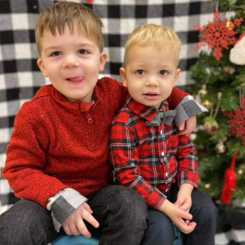

The Kids.
These are my boys. They are thirteen months apart, and they are quite the partners in crime! They know how to manipulate both of us, and they do so effortlessly. They always end up getting their way. They also look out for each other, yet will tear each other apart when wanting to play with the same toy. They are fearless. Especially the younger one, nothing deters him. While there are days when they drive me to wits end, there is nothing in this world I love more then them.